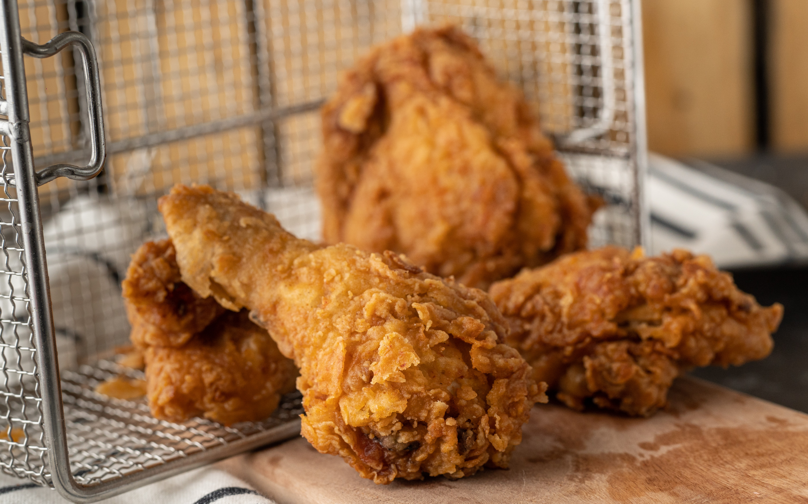

Crispy Fried Chicken
Total Time: 30 Mins

Ingredients
- 4 cups all-purpose flour, divided
- 2 tablespoons garlic salt
- 1 tablespoon paprike
- 1 teaspoon pepper,divided
- 2-1/2 teaspoons poultry seasoning
- 2 large eggs
- 1-1/2 cups water
- 1 teaspoon salt
- 2 broiler/fryer chickens (3-1/2 to 4 pounds each), cut up
- Oil for deep-fat frying
Directions
- In a large shallow dish, combine 2-2/3 cups flour, garlic salt, paprika, 2-1/2 teaspoons pepper and poultry seasoning.
- In another shallow dish, beat eggs and 1-1/2 cups water; add salt and the remaining 1-1/3 cups flour and 1/2 teaspoon pepper.
- Dip chicken in egg mixture, then place in flour mixture, a few pieces at a time. Turn to coat.`
- In a deep-fat fryer, heat oil to 375°. Fry chicken, several pieces at a time, until chicken is golden brown and juices run clear, 7-8 minutes on each side. Drain on paper towels.